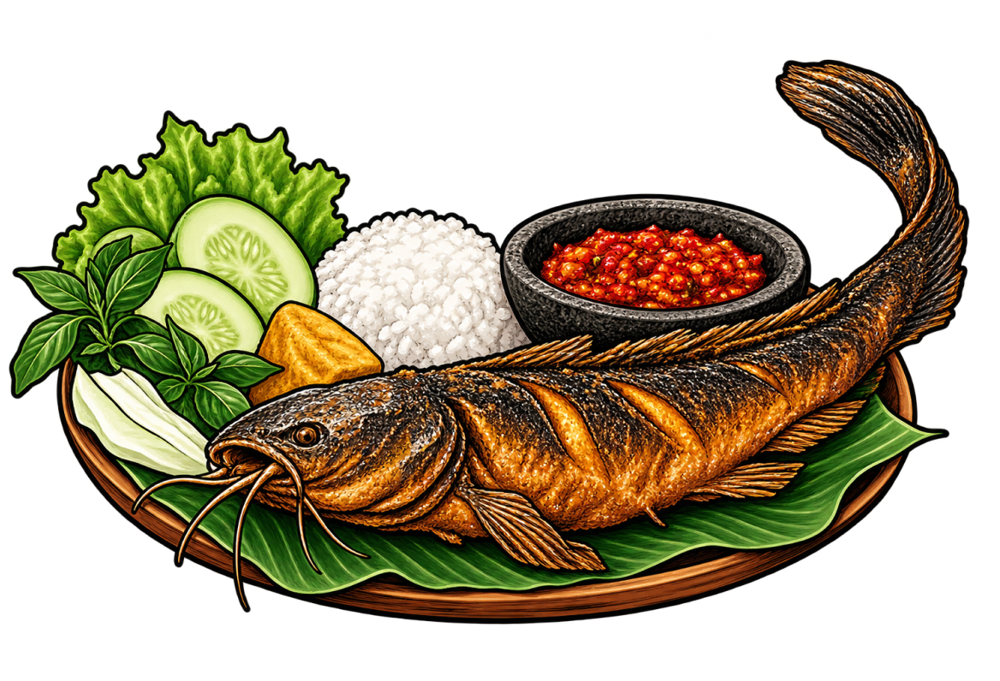
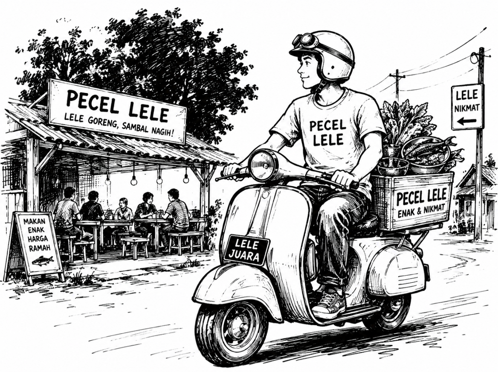

Pecel Lele is a simple Indonesian dish made with crispy fried catfish, warm rice, fresh vegetables, and our special homemade sambal.
At Pecel Lele Pak Jaya, we believe that good food does not have to be expensive. We serve every plate with fresh ingredients, delicious flavors, and a little bit of our passion.

Pecel Lele is a simple Indonesian dish made with crispy fried catfish, warm rice, fresh vegetables, and our special homemade sambal.